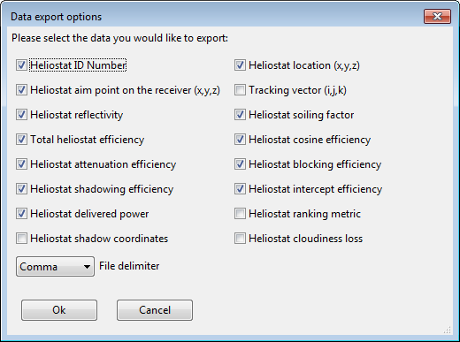
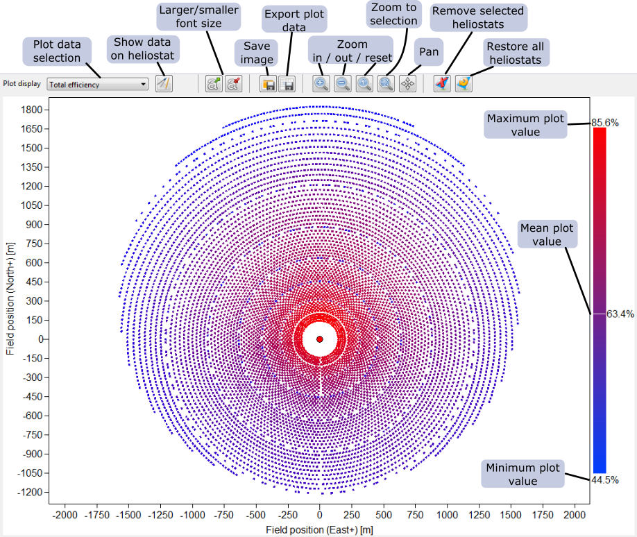
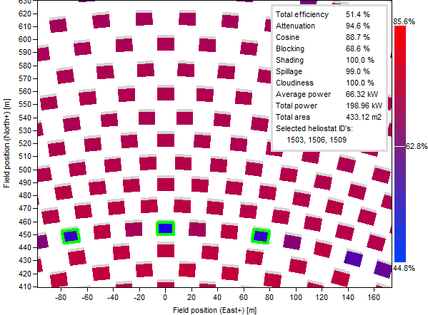

Layout results
Page Overview
The Layout Results page displays the current heliostat field layout and tower position from a top-down view, and it allows you to view performance data for the entire field and smaller regions of individual heliostats. The plot is interactive and responds to certain mouse actions.
This page includes:
Field Plot and Controls
The Layout results page consists of a control bar and the plot rendering of the field. The figure below annotates the various controls and pieces of information that are displayed on the plot.
The performance information shown on the plot corresponds to either:
- The sun position and Direct Normal Irradiation specified on the Performance Simulation page, if a performance simulation has been most recently executed, or
- The Sun Location at Design Point and Design-Point DNI Value on the Layout Setup page, if a field layout has been most recently executed.
The Plot data selection control allows you to specify which performance criteria is illustrated with the color map on the plot. The choices include:
- Land boundaries: An illustration of the area in which heliostats can be placed.
- Field layout: An illustration of the position and orientation of each heliostat without any superimposed performance information.
- Total efficiency: The total optical efficiency (including spillage and transmission losses) of each heliostat at the simulated sun position.
- Cosine efficiency: The cosine efficiency due to nonzero angular displacement between the heliostat normal vector and the sun vector (1.- fractional cosine loss)*100%
- Attenuation efficiency: The attenuation efficiency due to atmospheric scattering after reflection (1.- fractional attenuation loss)*100%
- Blocking efficiency: Loss due to reflected light from the heliostat being intercepted by another heliostat (1. - fractional blocking loss)*100%
- Shading efficiency: Loss due to light from the sun being blocked from hitting the heliostat (a.k.a shadowing; 1 - fractional shading loss)*100%
- Image intercept efficiency: Loss due to light that is reflected by the heliostat that misses the receiver target (a.k.a. spillage; 1 - fractional intercept loss)*100%
- Reflectivity: Loss due to partial absorption of light incident on the heliostat mirror surface (light reflected / light incident)
- Delivered power: Total power delivered to the surface of the receiver (does not include receiver surface reflective loss)
- Ranking metric: The value used to determine which heliostats are to be included in the layout. By default, the ranking metric is the total energy delivered to the receiver over the course of all simulated hours. The metric does not necessarily represent the expected annual production for each heliostat, but establishes which heliostats are relatively more productive over time.
- Optical mesh: The cylindrical coordinate zones into which heliostats are grouped to evaluate intercept factor during field layout, if the Enable Optical Layout Zone Method checkbox is enabled on the Layout Setup page. Heliostats within each zone have approximately the same intercept factor, and a single calculation is made for each zone to expedite the layout calculations. Note that the optical mesh is not used for performance simulations or for raytrace simulations.
The Show data heliostat button toggles the display of the selected (numeric) performance value on each heliostat, if the plot is zoomed in sufficiently to allow each number to render. When enabled, the image shows a black triangle.
The Save image button opens a file dialog that allows you to export the displayed image to file. You can specify the resolution (DPI), path, and filename in the dialog. The image will reproduce the displayed plot in the application, including font, zoom, and pan attributes.
The Export plot data button opens a file dialog that allows you to export the performance data for each heliostat in the field. The dialog allows you to specify which fields will be provided for each heliostat.

The Remove selected heliostats button will remove the selected heliostats (see below for information on selecting heliostats) from the layout, although their position and information will be preserved and can be restored. Heliostats that are not in the layout are not included in performance calculations.
The Restore all heliostats button will repopulate the field with all original heliostats, restoring those that have been previously removed. This action cannot be undone.

Interacting with the plot
The field plot is interactive, allowing several actions to be taken.
Left mouse click + drag |
Pan the plot |
Left mouse click + drag (zoom mode) |
Zoom to rectangle |
Mouse wheel scroll |
Zoom in/out |
Right mouse click |
Select nearest heliostat to click location |
CTRL + right mouse click |
Select multiple heliostats |
CTRL + right mouse click - selected |
De-select already selected heliostat |
Right mouse click - empty space |
De-select all heliostats |
Upon selecting one or more heliostats, the field plot will display statistics in the upper right corner of the window. The values correspond only to the heliostat(s) that are currently selected. Selected heliostats will appear with a green border in the plot.

Created with the Personal Edition of HelpNDoc: Generate EPub eBooks with ease